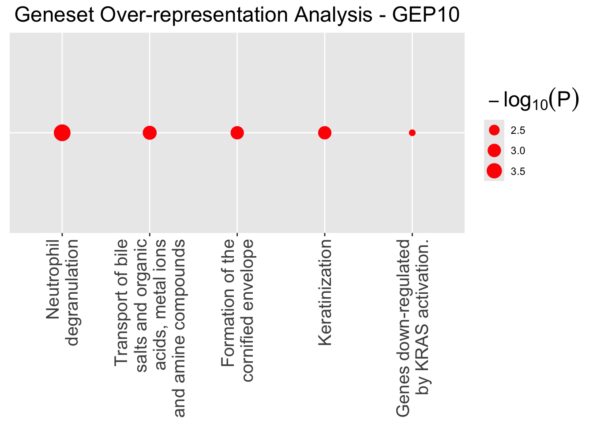
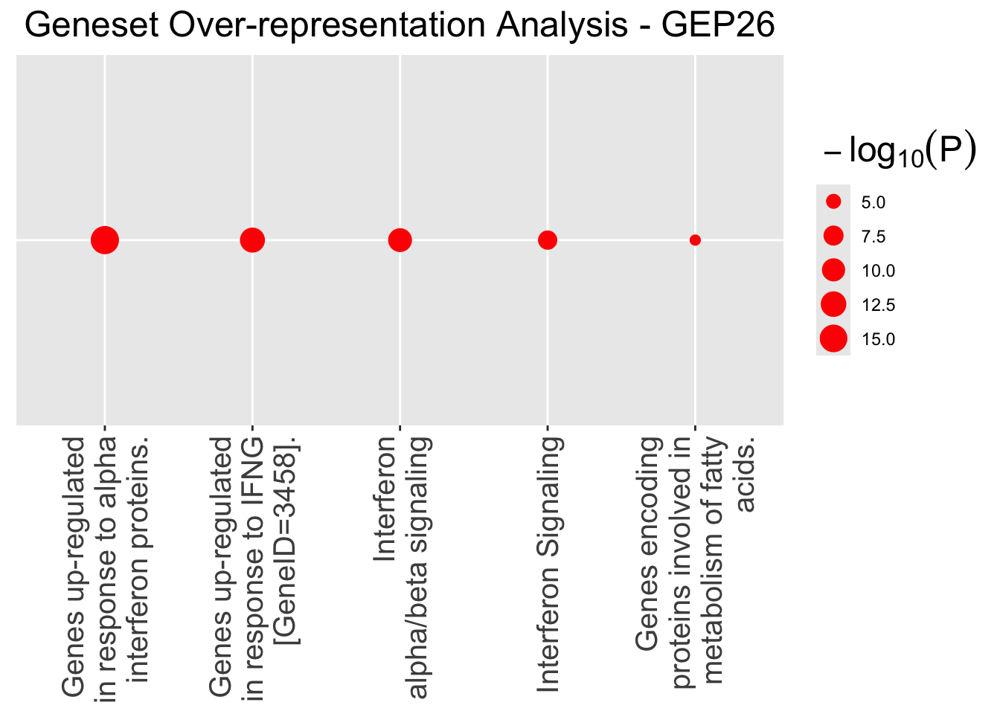

hnscc-analysis
xxie6
2024-02-29
Last updated: 2024-04-11
Checks: 7 0
Knit directory: EBCD_GBCD_comparison/
This reproducible R Markdown analysis was created with workflowr (version 1.7.1). The Checks tab describes the reproducibility checks that were applied when the results were created. The Past versions tab lists the development history.
Great! Since the R Markdown file has been committed to the Git repository, you know the exact version of the code that produced these results.
Great job! The global environment was empty. Objects defined in the global environment can affect the analysis in your R Markdown file in unknown ways. For reproduciblity it’s best to always run the code in an empty environment.
The command set.seed(20240229) was run prior to running
the code in the R Markdown file. Setting a seed ensures that any results
that rely on randomness, e.g. subsampling or permutations, are
reproducible.
Great job! Recording the operating system, R version, and package versions is critical for reproducibility.
Nice! There were no cached chunks for this analysis, so you can be confident that you successfully produced the results during this run.
Great job! Using relative paths to the files within your workflowr project makes it easier to run your code on other machines.
Great! You are using Git for version control. Tracking code development and connecting the code version to the results is critical for reproducibility.
The results in this page were generated with repository version 924bd2d. See the Past versions tab to see a history of the changes made to the R Markdown and HTML files.
Note that you need to be careful to ensure that all relevant files for
the analysis have been committed to Git prior to generating the results
(you can use wflow_publish or
wflow_git_commit). workflowr only checks the R Markdown
file, but you know if there are other scripts or data files that it
depends on. Below is the status of the Git repository when the results
were generated:
Ignored files:
Ignored: .DS_Store
Ignored: .Rhistory
Note that any generated files, e.g. HTML, png, CSS, etc., are not included in this status report because it is ok for generated content to have uncommitted changes.
These are the previous versions of the repository in which changes were
made to the R Markdown (analysis/hnscc-analysis.Rmd) and
HTML (docs/hnscc-analysis.html) files. If you’ve configured
a remote Git repository (see ?wflow_git_remote), click on
the hyperlinks in the table below to view the files as they were in that
past version.
| File | Version | Author | Date | Message |
|---|---|---|---|---|
| Rmd | 924bd2d | Annie Xie | 2024-04-11 | Add initial hnscc analysis to project |
Introduction
The Stephens Lab has proposed two different ways of performing orthogonal matrix factorization. We aim to compare these two methods and apply them to single cell RNA sequencing data.
Methods
GBCD
The first method is called Generalized Binary Covariance Decomposition (GBCD). The GBCD model aims to produce the following decomposition: \[Y_{ij} \approx \sum_{k=1}^{K} L_{ik}F_{jk}\]
where we make the following two assumptions:
- Memberships \(L_{ik}\) are
nonnegative and often nearly binary
- The GEP signatures \(F_{\cdot k}\) are mutually orthogonal
Note that these two assumptions imply that
\[YY^{T} \approx LF^{T}FL^{T} =
LDL^{T}\]
To fit the model, the GBCD method consists of the following steps:
- Finding \(L\) and \(D\) in the second expression by performing
EBMF on \(YY^{T}\)
- Estimating \(F\) based off the first expression by performing EBMF on \(Y\) with \(L\) fixed (at which point we do not force the orthogonality assumption, so assumption two is a soft assumption)
EBCD
The second method is called Empirical Bayes Covariance Decomposition (EBCD). For EBCD, the model is \[X = ZL^{T} +E\] where \(Z\) is a \(N \times K\) orthogonal matrix and \(L\) is \(P \times K\) matrix over which we put a sparsity-inducing prior. (In regular PCA, we would also assume \(L^{T}L\) is diagonal, but for sparse PCA, we replace that assumption with a sparsity penalization.) An equivalent represent for EBCD is \[X^{T}X \approx LL^{T}.\]
Note that in GBCD, we have \(YY^{T} \approx LL^{T}\) and we assume \(F\) is orthogonal. Therefore, \(F\) maps to \(Z\) in EBCD and \(Y^{T}\) maps to \(X\) in EBCD. So when applying EBCD, you may need to take the transpose of the original data matrix.
To fit the model, the EBCD algorithm iterates the following sequence
of steps:
1. Update \(g_k\) and \(q_k\) using an EBNM solver
2. Update \(Z\) by setting \(Z = Polar.U(X\bar{L})\)
3. Update the precision, \(\tau\)
Application to HNSCC Data
In this section, we will apply both methods to single cell RNA sequencing data. We will compare the factorizations recovered from both methods, and we also will compare the run time. The dataset is a head and neck squamous cell carcinoma (hnscc) dataset. The data was collected by Puram et al. from primary tumors from 10 hnscc patients. The rows correspond to samples and the columns correspond to genes. Our data matrix is \(2176 \times 17113\).
First we load the needed R packages:
library(ggplot2)
library(cowplot)
library(RColorBrewer)
library(ggrepel)
library(pheatmap)
library(gridExtra)
library(Matrix)
library(ebnm)
library(flashier)Loading required package: magrittrlibrary(magrittr)
library(ashr)
library(irlba)
library(reshape2)
source("~/Documents/PhD 3/Research/EBCD/gbcd-workflow/code/fit_cov_ebnmf.R")We also define some functions here.
This function produces a heatmap visualization of the GEP
memberships:
loadings_visualization <- function(info, fit_L, sample.names, subject_col, subtype_col, subjects_subset = NULL){
if (is.null(subjects_subset) == FALSE){
anno <- data.frame(subject = info$subject[(info$subject %in% subjects_subset)],
subtype = info$subtype[(info$subject %in% subjects_subset)])
anno_colors <- list(subject = subject_col[subjects_subset],
subtype = subtype_col)
}
else{
anno <- data.frame(subject = info$subject,
subtype = info$subtype)
anno_colors <- list(subject = subject_col,
subtype = subtype_col)
}
rownames(anno) <- sample.names
cols <- colorRampPalette(c("gray96","red"))(50)
brks <- seq(min(fit_L), max(fit_L),length.out= 50)
rows <- order(anno$subject)
p <- pheatmap(fit_L[rows, -1], cluster_rows = FALSE, cluster_cols = FALSE,
show_rownames = FALSE, annotation_row = anno, annotation_names_row = FALSE,
annotation_colors = anno_colors, angle_col = 45, fontsize = 8, color = cols, breaks = brks, main = "")
print(p)
}This function produces a volcano plot visualization of the GEPs and driving genes of each GEP:
volcano_plot_gbcd <- function(fit.gbcd, k){
pdat <- data.frame(gene = rownames(fit.gbcd$F$lfc),
lfc = fit.gbcd$F$lfc[,k],
z = abs(fit.gbcd$F$z_score[,k]),
lfsr = fit.gbcd$F$lfsr[,k],
stringsAsFactors = FALSE)
pdat <- transform(pdat,lfsr = cut(lfsr, c(-1,0.001,0.01,0.05,Inf)))
rows <- with(pdat, which(!(abs(lfc) > quantile(abs(lfc),0.999) | (z > 10))))
pdat[rows, "gene"] <- ""
p <- ggplot(pdat, aes(x = lfc, y = z, color = lfsr, label = gene)) +
geom_point() +
geom_text_repel(color = "black", size = 2.3, segment.color = "black",
segment.size = 0.25, min.segment.length = 0,
max.overlaps = Inf, na.rm = TRUE) +
scale_color_manual(values = c("coral","orange","gold","deepskyblue")) +
labs(x = "log-fold change", y = "|posterior z-score|") +
theme_cowplot(font_size = 10)
print(p)
}This is a function to classify GEPs as patient-specific vs. shared:
gep_classification <- function(ebcd.L){
num.gep <- ncol(ebcd.L) - 1
gep.classifications <- rep('0', num.gep)
for (i in 2:num.gep){
table.k <- as.matrix(table(ebcd.L[,i] > 0.05, ebcd.L$subject))
ratio.k <- table.k[2,]/colSums(table.k) #proportion of cells in patient i that show expression in GEP k
max.ratio <- max(ratio.k[ratio.k!=max(ratio.k)])/max(ratio.k)
if (max.ratio > 0.2){
gep.classifications[(i-1)] <- 'shared'
}
else{
gep.classifications[(i-1)] <- 'patient-specific'
}
}
return(gep.classifications)
}This function generates the tile plot visualization of a matrix:
# #Yusha's code for Figure 2C
GEP_tile_plot <- function(F.pm, k.idx1){
### load in lfc estimates for shared GEPs identified by gbcd
F.pm <- fit.gbcd$F$lfc[, k.idx1+1]
colnames(F.pm) <- paste0("GEP", (k.idx1))
### make the effect size tile plots of the top 10 driving genes for each shared GEP
n <- 10
geps <- paste0("GEP", (k.idx1))
genes <- c()
for (gep in geps) {
f <- F.pm[, gep]
i <- head(order(f, decreasing = TRUE), n = n)
i <- setdiff(i, genes)
genes <- c(genes, i)
}
dat <- cbind(gene = rownames(F.pm)[genes], as.data.frame(F.pm[genes, geps]))
dat <- transform(dat, gene = factor(gene, gene))
rownames(dat) <- NULL
dat <- melt(dat)
names(dat) <- c("gene","gep","lfc")
dat <- transform(dat, gep = factor(gep, rev(geps)), lfc = lfc)
dat$lfc[dat$lfc > 10] <- 10
dat$lfc[dat$lfc < -10] <- -10
dat <- transform(dat, lfc = cut(lfc, breaks = c(-10, -5, -2, -1, -0.5, 0, 0.5, 1, 2, 5, 10)))
colors <- colorRampPalette(c("blue","white","red"))(10)
p_gbcd <- ggplot(dat, aes(x = gene, y = gep, fill = lfc)) + geom_tile() + scale_fill_manual(values = colors) +
theme_cowplot(font_size = 8) + theme(axis.text.x = element_text(angle = 90, hjust = 1)) + labs(x = "", y = "", fill = "LFC")
print(p_gbcd)
}This RData file contains the hnscc dataset:
load("~/Documents/PhD 3/Research/EBCD/gbcd-workflow/hnscc/hnscc.RData")GBCD Analysis
Yusha’s GBCD results are stored in this RData file. We will load the results:
load("~/Documents/PhD 3/Research/EBCD/gbcd-workflow/hnscc/hnscc_gbcd.RData")This is a heatmap visualizing the loadings for the GEPs:
loadings_visualization(info, fit.gbcd$L, rownames(fit.gbcd$L), subject_col, subtype_col)Observations
From the loadings matrix, it looks like GBCD discovered 3 subtype-specific GEPs (one of which is also patient-specific), 7 patient-specific GEPs (including the subtype-specific GEP), and 19 shared GEPs. Yusha told me that she discarded some of the GEPs that either were correlated to size factor or did not appear to have a biological meaningful interpretation.
Interpretation of GEPs
From visual inspection, we see that some GEPs correspond to patient-specific effects. In addition, there are three GEPs which correspond to the three subtypes. Lastly, other GEPs corresponded to effects shared across multiple patients. Here is a full list of GEP interpretations:
- Classical subtype
- Basal subtype
- Atypical subtype/patient MEEI26 (two different colors correspond to
MEEI26 because there are two different tumors from this patient)
- patient MEEI17
- a shared GEP (though this GEP is more dense in the classical and
atypical subtypes)
- shared GEP
- patient MEEI25
- shared GEP
- patient MEEI6
- shared GEP
- patient MEEI18
- shared GEP
- shared GEP
- shared GEP
- shared GEP
- shared GEP
- shared GEP
- shared GEP
- shared GEP
- shared GEP
- shared GEP
- shared GEP
- shared GEP
- shared GEP
- patient MEEI5
- shared GEP
- patient MEEI22
- shared GEP
Visualization of factor matrix
This is a tile plot visualization of the top 10 driving genes for each shared GEP. We are trying to visualize (a subset of) the factor matrix.
GEP_tile_plot(fit.gbcd$F$lfc, gbcd.k.idx1)Using gene as id variablesAssessing the fit
gbcd.fitted.values <- fit.gbcd$L %*% t(fit.gbcd$F$lfc)samp.vals <- sample(c(1:prod(dim(Y))), size = 50000)ggplot(data = NULL, aes(x = c(as.matrix(Y)[samp.vals]), y = c(gbcd.fitted.values)[samp.vals])) + geom_point() + xlab('Observed Values') + ylab('Fitted Values') + geom_abline(slope = 1, intercept = 0, color = 'red')sum((Y-gbcd.fitted.values)^2)[1] 51296854EBCD Analysis
I have the results from EBCD saved in a RData file:
load("~/Documents/PhD 3/Research/EBCD/ebcd_hnscc_full.RData")This is a heatmap visualizing the loadings for the GEPs. In GBCD, the loadings are scaled so that the maximum membership value for each GEP is 1. The EBCD method does not do this, so I apply the same scaling transformation to the loadings estimate from EBCD. This is a heatmap visualizing the scaled loadings for the GEPs:
ebcd.fit_full_L <- ebcd.fit_full$EL
gep_colnames <- c('Baseline', paste('GEP', c(1:(ncol(ebcd.fit_full_L) - 1))))#scaled version
ebcd.fit_full_L_scaled <- t(t(ebcd.fit_full_L)/apply(ebcd.fit_full_L,2, max))
colnames(ebcd.fit_full_L_scaled) <- gep_colnames
rownames(ebcd.fit_full_L_scaled) <- rownames(Y)
loadings_visualization(info, ebcd.fit_full_L_scaled, rownames(Y), subject_col, subtype_col)Observations
From the loadings matrix, it seems that EBCD uncovered two subtype-specific GEPs (one of which is also a patient-specific GEP), eight patient-specific GEPs, and 19 shared GEPs. Something interesting is EBCD uncovered one more patient-specific GEP than GBCD. Another interesting observation is EBCD uncovered one fewer subtype-specific GEP than GBCD. In addition, some of the shared GEPs from EBCD are most dense in one or two of the subtypes – I’m not sure if this means that coupled subtypes are grouped together in some way or if there’s some identifiability issues that led to this coupling.
Interpretation of GEPs
Here is a full list of GEP interpretations:
- patient MEEI20
- Atypical subtype/patient MEEI26 (two different colors correspond to
MEEI26 because there are two different tumors from this patient)
- patient MEEI6
- shared GEP
- patient MEEI17
- shared GEP
- shared GEP (but it is most dense in the classical and atypical
subtypes)
- patient MEEI25
- patient MEEI18
- shared GEP
- shared GEP (but it is most dense in the classical and atypical
subtypes)
- patient MEEI28
- primarily classical subtype
- shared GEP (but most dense in the basal subtype)
- shared GEP
- shared GEP
- shared GEP
- shared GEP
- patient MEEI5
- shared GEP
- shared GEP
- shared GEP (but it is most dense in the classical and atypical
subtypes)
- shared GEP
- shared GEP
- shared GEP
- shared GEP
- shared GEP
- shared GEP
Classification of GEPs as patient specific vs shared
# ### specify the indices of shared and patient-specific GEPs respectively
ebcd.L <- data.frame(ebcd.fit_full_L_scaled)
ebcd.L$subject <- info$sample.id
ebcd.gep_classifications <- gep_classification(ebcd.L)
ebcd.k.idx1 <- which(ebcd.gep_classifications == 'shared')
ebcd.k.idx2 <- which(ebcd.gep_classifications == 'patient-specific')
ebcd.k.idx <- c(ebcd.k.idx2, ebcd.k.idx1)Here is a visualization of the loadings matrix with the GEPs separated by patient-specific and shared:
loadings_visualization(info, ebcd.fit_full_L_scaled[,c(1, (ebcd.k.idx+1))], rownames(Y), subject_col, subtype_col)
Visualization of factor matrix
The EBCD output returns the \(Z\) estimate for an equivalent problem. However, to get the \(Z\) estimate for the original problem, you must perform a transformation. I have the transformed Z saved in the file:
Z <- readRDS("~/Documents/PhD 3/Research/EBCD/EBCD_hnscc_Z.rds")This is a tile plot visualization of the top 10 driving genes for each shared GEP. We are trying to visualize (a subset of) the factor matrix.
### load in lfc estimates for shared GEPs identified by gbcd
GEP_tile_plot(Z, ebcd.k.idx1)Using gene as id variablesGene Set Enrichment Analysis of factors
Lastly, we did gene set enrichment analysis on the GEPs from EBCD. Using gene lists, we run gene set enrichment analysis using code provided by Yusha. The results are saved in these rds files. We also have a visualization of the top 5 genesets that are over-represented in the driving genes of the GEP. These plots were created using Yusha’s code; these are not the credible sets that SuSie outputs.
library(stringr)#adapted from Yusha's code
# idx <- 1
# ### display the gene set enrichment analysis result for the GEP signature
# dat.k <- readRDS(paste0("~/Documents/PhD 3/Research/EBCD/gbcd-workflow/hnscc/gsea/GEP", idx, ".rds"))
gsea_plot <- function(idx, dat.k){
dat.k <- dat.k[1:pmin(nrow(dat.k), 5),]
dat.k$cluster <- paste0("GEP", idx)
dat.k$nlog10p <- pmin(dat.k$nlog10pFishersExact, 15)
dat.k$description <- factor(dat.k$description, levels=dat.k$description)
p2 <- ggplot(dat.k, aes_string(x = "description", y = "cluster", size = "nlog10pFishersExact")) + scale_x_discrete(labels = function(x) str_wrap(x, width = 20))
p2 <- p2 + geom_point(colour = "red") + xlab(NULL) + ylab(NULL) + scale_size_continuous(range=c(2, 6)) +
guides(size = guide_legend(order = 1, title = TeX(r"($-\log_{10}(P)$)"))) + ggtitle(paste0("Geneset Over-representation Analysis - GEP", idx)) +
theme(axis.text.x = element_text(size = 15, angle = 90, vjust = 0.5, hjust=1), legend.title = element_text(size = 18), plot.title = element_text(hjust = 0.5, size = 18), axis.text.y = element_blank(), axis.ticks.y = element_blank())
print(p2)
}library(gtools)
library(latex2exp)gsea.k.idx1 <- c(4,6,7,10,11,14,15,16,17,18,20,21,22,23,24,25,26,27,28) #shared GEPs
files <- Sys.glob('~/Documents/PhD 3/Research/EBCD/EBCD_gsea/factor*', dirmark = FALSE)
files <- gtools::mixedsort(files)
for (k in 1:length(files)){
dat.k <- readRDS(files[k])
idx <- gsea.k.idx1[k]
gsea_plot(idx, dat.k)
}Warning: `aes_string()` was deprecated in ggplot2 3.0.0.
ℹ Please use tidy evaluation idioms with `aes()`.
ℹ See also `vignette("ggplot2-in-packages")` for more information.
This warning is displayed once every 8 hours.
Call `lifecycle::last_lifecycle_warnings()` to see where this warning was
generated.
Assessing the fit
ebcd.fitted.values <- Z %*% t(ebcd.fit_full$EL)ggplot(data = NULL, aes(x = c(as.matrix(t(Y))[samp.vals]), y = c(ebcd.fitted.values)[samp.vals])) + geom_point() + xlab('Observed Values') + ylab('Fitted Values') + geom_abline(slope = 1, intercept = 0, color = 'red')sum((t(Y)-ebcd.fitted.values)^2)[1] 69044763Comparison of the outputs
Comparing the Loadings matrices
loadings_visualization(info, fit.gbcd$L[,c(1, gbcd.k.idx+1)], rownames(fit.gbcd$L), subject_col, subtype_col)
loadings_visualization(info, ebcd.fit_full_L_scaled[,c(1, (ebcd.k.idx+1))], rownames(Y), subject_col, subtype_col)Computing correlation of the loadings estimates
We first analyze the concordance between the loadings matrices from GBCD and EBCD. We compute the correlations between the columns of the GBCD loadings estimate and the columns of the EBCD loadings estimate.
correlation_matrix <- cor(fit.gbcd$L, ebcd.fit_full_L)For each column of the EBCD loadings estimate, we identify the corresponding column of the GBCD loadings estimate that is most highly correlated.
max_correlation2 <- apply(correlation_matrix, 2, FUN = max)
return_gep <- function(x){
gep_index <- which.max(x)
if (gep_index == 1){
gep_name <- 'Baseline'
}
else{
gep_name <- paste('GEP',(gep_index - 1))
}
return(gep_name)
}
max_gbcd_gep <- apply(correlation_matrix, 2, FUN = return_gep)gep_colnames <- c('Baseline', paste('GEP', c(1:(ncol(ebcd.fit_full_L) - 1))))
correlation_info1.2 <- data.frame(max_gbcd_gep, max_correlation2, row.names = gep_colnames)
print(correlation_info1.2[order(correlation_info1.2$max_correlation2, decreasing = TRUE), ]) max_gbcd_gep max_correlation2
Baseline Baseline 0.9926223
GEP 3 GEP 9 0.9904580
GEP 8 GEP 7 0.9892136
GEP 5 GEP 4 0.9872016
GEP 2 GEP 3 0.9817010
GEP 1 GEP 1 0.9639916
GEP 19 GEP 25 0.9587368
GEP 9 GEP 11 0.8742653
GEP 21 GEP 14 0.8321674
GEP 11 GEP 1 0.8241774
GEP 28 GEP 12 0.7969180
GEP 4 GEP 8 0.7809100
GEP 13 GEP 1 0.7604189
GEP 7 GEP 1 0.6916835
GEP 22 GEP 5 0.6531408
GEP 18 GEP 6 0.6044451
GEP 17 GEP 2 0.5863873
GEP 25 GEP 26 0.5707728
GEP 14 GEP 28 0.5428904
GEP 6 GEP 6 0.5393635
GEP 10 GEP 13 0.5257710
GEP 26 GEP 18 0.5224878
GEP 23 GEP 2 0.5006992
GEP 24 GEP 2 0.4484873
GEP 20 GEP 16 0.4418414
GEP 12 GEP 23 0.4354294
GEP 15 GEP 27 0.3895859
GEP 16 GEP 16 0.3786894
GEP 27 GEP 5 0.3637642Computing correlations of the factor estimates
Next, we analyze the concordance between the factor matrices from GBCD and EBCD. We follow the same steps.
factor_correlation_matrix <- cor(fit.gbcd$F$lfc, Z)For each column of the EBCD factors estimate, we identify the corresponding column of the GBCD factors estimate that is most highly correlated.
factor_max_correlation2 <- apply(factor_correlation_matrix, 2, FUN = max)
max_gbcd_factor_gep <- apply(factor_correlation_matrix, 2, FUN = return_gep)# gep_colnames <- c('Baseline', paste('GEP', c(1:(ncol(ebcd.fit_full_L) - 1))))
correlation_info2.2 <- data.frame(max_gbcd_factor_gep, factor_max_correlation2, row.names = gep_colnames)
print(correlation_info2.2[order(correlation_info2.2$factor_max_correlation2, decreasing = TRUE), ]) max_gbcd_factor_gep factor_max_correlation2
Baseline Baseline 0.9738124
GEP 8 GEP 7 0.9083285
GEP 2 GEP 3 0.8586369
GEP 5 GEP 4 0.8491722
GEP 19 GEP 25 0.8375469
GEP 3 GEP 9 0.8147019
GEP 21 GEP 14 0.7829034
GEP 9 GEP 11 0.7782279
GEP 1 GEP 1 0.7303190
GEP 28 GEP 12 0.6570628
GEP 4 GEP 8 0.6255442
GEP 18 GEP 6 0.5357453
GEP 25 GEP 26 0.4956990
GEP 14 GEP 28 0.4780175
GEP 10 GEP 13 0.4615861
GEP 6 GEP 6 0.4097887
GEP 15 GEP 27 0.4072208
GEP 26 GEP 18 0.4018246
GEP 24 GEP 20 0.3878383
GEP 17 GEP 28 0.3725357
GEP 20 GEP 24 0.3650022
GEP 16 GEP 16 0.3231424
GEP 22 GEP 1 0.3118718
GEP 13 GEP 20 0.3110118
GEP 27 GEP 15 0.3008144
GEP 12 GEP 23 0.2936606
GEP 23 GEP 17 0.2911204
GEP 7 GEP 5 0.2810376
GEP 11 GEP 21 0.2268515Looking at least concordant GEPs
The least correlated GEP signatures (with respect to the loadings) from the EBCD output are GEPs 10, 26, 23, 24, 20, 12, 15, 16, 27.
These are the top significantly enriched gene sets for those
GEPs:
1. GEP10 - Neutrophil degranulation
2. GEP26 - Genes up-regulated in response to alpha interferon
proteins
3. GEP23 - Interferon alpha/beta signaling
4. GEP24 - Eukaryotic Translation Elongation
5. GEP20 - Genes regulated by NF-kB in response to TNF [GeneID =
7124]
6. GEP17 - Genes defining epithelial-mesechymal transition, as in wound
healing, fibrosis and metastasis
7. GEP12 - Patient specific – MEEI28 (didn’t do gene set analysis on
this)
8. GEP15 - Formation of the cornified envelope
9. GEP6 - Genes up-regulated in response to low oxygen levels
(hypoxia)
10. GEP27 - Genes up-regulated in response to low oxygen levels
(hypoxia)
sessionInfo()R version 4.3.2 (2023-10-31)
Platform: aarch64-apple-darwin20 (64-bit)
Running under: macOS Ventura 13.6
Matrix products: default
BLAS: /Library/Frameworks/R.framework/Versions/4.3-arm64/Resources/lib/libRblas.0.dylib
LAPACK: /Library/Frameworks/R.framework/Versions/4.3-arm64/Resources/lib/libRlapack.dylib; LAPACK version 3.11.0
locale:
[1] en_US.UTF-8/en_US.UTF-8/en_US.UTF-8/C/en_US.UTF-8/en_US.UTF-8
time zone: America/Chicago
tzcode source: internal
attached base packages:
[1] stats graphics grDevices utils datasets methods base
other attached packages:
[1] latex2exp_0.9.6 gtools_3.9.5 stringr_1.5.1 reshape2_1.4.4
[5] irlba_2.3.5.1 ashr_2.2-63 flashier_1.0.7 magrittr_2.0.3
[9] ebnm_1.1-2 Matrix_1.6-5 gridExtra_2.3 pheatmap_1.0.12
[13] ggrepel_0.9.5 RColorBrewer_1.1-3 cowplot_1.1.3 ggplot2_3.5.0
[17] workflowr_1.7.1
loaded via a namespace (and not attached):
[1] softImpute_1.4-1 gtable_0.3.4 xfun_0.43 bslib_0.7.0
[5] processx_3.8.4 lattice_0.22-6 callr_3.7.6 vctrs_0.6.5
[9] tools_4.3.2 ps_1.7.6 generics_0.1.3 parallel_4.3.2
[13] tibble_3.2.1 fansi_1.0.6 highr_0.10 pkgconfig_2.0.3
[17] SQUAREM_2021.1 lifecycle_1.0.4 truncnorm_1.0-9 farver_2.1.1
[21] compiler_4.3.2 git2r_0.33.0 munsell_0.5.1 getPass_0.2-4
[25] httpuv_1.6.15 htmltools_0.5.8 sass_0.4.9 yaml_2.3.8
[29] crayon_1.5.2 tidyr_1.3.1 later_1.3.2 pillar_1.9.0
[33] jquerylib_0.1.4 whisker_0.4.1 cachem_1.0.8 trust_0.1-8
[37] tidyselect_1.2.1 digest_0.6.35 stringi_1.8.3 purrr_1.0.2
[41] dplyr_1.1.4 labeling_0.4.3 splines_4.3.2 rprojroot_2.0.4
[45] fastmap_1.1.1 grid_4.3.2 colorspace_2.1-0 cli_3.6.2
[49] invgamma_1.1 utf8_1.2.4 withr_3.0.0 scales_1.3.0
[53] promises_1.2.1 horseshoe_0.2.0 rmarkdown_2.26 httr_1.4.7
[57] deconvolveR_1.2-1 evaluate_0.23 knitr_1.45 rlang_1.1.3
[61] Rcpp_1.0.12 mixsqp_0.3-54 glue_1.7.0 rstudioapi_0.16.0
[65] jsonlite_1.8.8 plyr_1.8.9 R6_2.5.1 fs_1.6.3